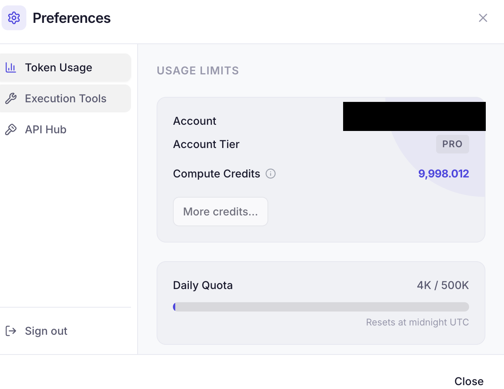
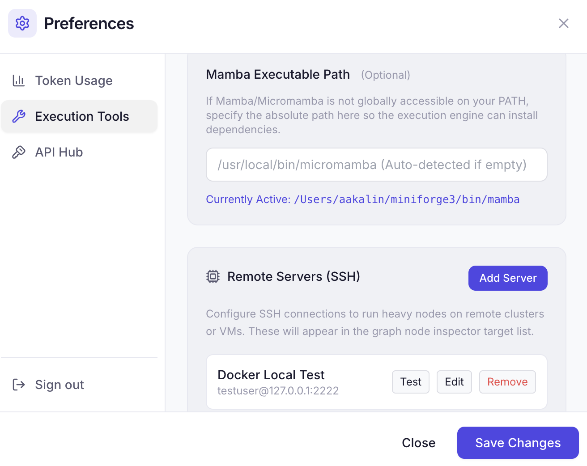

Settings
Open Settings by clicking the ⚙️ Settings button at the bottom of the sidebar. The preferences panel has three tabs.
Token Usage

Monitor your API consumption and account status:
- Account Tier — Free or Academic (🎓) (also free)
- Compute Credits — Your current credit balance for AI operations
- Daily Quota — Token usage today vs. your daily limit (resets at midnight UTC)
- Monthly Quota — Token usage this month vs. your monthly limit
- Historical Total — All-time token consumption
What Do Credits Get You?
With 10,000 credits you can approximately:
- Light Tasks: Analyze ~25 million input tokens (equivalent to scanning ~1,500 dense PDF papers)
- Medium Tasks: Generate ~6.6 million tokens of deep reasoning or complex coding
Requesting More Credits or Lab Licenses
Need additional cloud compute credits or tokens or lab licensing? Contact hello@rolv.io. Academic researchers and research groups can request grant-sponsored compute for publishing papers with Rolv.
Execution Tools
Configure how rolv runs code and manages environments.

Python Version
Select the Python version (3.10–3.14) used for new sandbox environments. A template kernel is created on first use.
R Version
Select the R version (4.2.3–4.6.1) for R node environments, managed via Mamba. Default is 4.4.1. Changing version builds a new template — start a new session (or delete ~/.rolv/envs/_template_r…) so the pin takes effect.

Mamba Path
If Mamba/Micromamba isn't on your system PATH, specify the absolute path so the execution engine can install dependencies. Leave empty for auto-detection.
Remote Compute
Configure remote targets to run compute nodes off your laptop. SSH, OpenStack VMs, and Slurm clusters share one slot cap (Free: 1, Academic: 3, Pro+: unlimited). Only SSH executes today; OpenStack and Slurm can be saved as slots for later.
To add an SSH target:
- Click Add Target (disabled when you are at the slot cap)
- Fill in: Name, Host, Port, Username
- Choose auth method: Key Pair or Password (prompted on connect)
- For key auth: specify the private key path (e.g.,
~/.ssh/id_rsa) - Set the remote work directory and Python command
- Click Test to verify the connection
Configured SSH targets appear in the graph node inspector's Execution Target dropdown.

Recipe Sharing
Control what happens when AI modifies a cloud-origin recipe:
- Ask every time — Prompts you to share improvements after saving
- Never ask — Silently skips the sharing prompt
- Auto broadcast — Automatically submits contributions
Global AI Instructions
Custom instructions injected into all AI agent calls. Use this for consistent preferences like:
- Language choice (e.g., "Always use Python instead of R")
- Coding style (e.g., "Set random seeds for reproducibility")
- Library preferences (e.g., "Use seaborn with darkgrid theme")
API Hub
Bring your own API keys to customize or bypass rolv's cloud services.
Custom LLM Provider
Use any OpenAI-compatible API. OpenAI, Groq, Ollama, and OpenRouter presets fill the URL and a tool-capable model. Groq uses https://api.groq.com/openai/v1 (not /v1). Localhost Ollama does not need an API key.
Free & Local LLM Options:
- Local Ollama (100% Free & Offline): Run models locally on your GPU/Mac (e.g.
ollama run llama3.2orollama run qwen2.5-coder). No data leaves your machine, perfect for unpublished research. - GroqCloud (Free Developer Tier): High-speed inference for Llama 3.3 models via console.groq.com.
- OpenRouter (Free Open-Source Models): Access free model variants (
:free) with zero credit card lock-in at openrouter.ai.
| Field | Description |
|---|---|
| Base URL | The API endpoint (e.g., https://api.openai.com/v1, http://localhost:11434/v1, or https://openrouter.ai/api/v1) |
| Model Name | The model identifier (e.g., gpt-4o, llama3.2, meta-llama/llama-3.3-70b-instruct:free) |
| API Key | Required for cloud providers. Leave empty for local Ollama / LM Studio on localhost |
| Usage Mode | Never Use, Use as Fallback (when rolv quota is exceeded), or Always Use |
Embedding Model
Embeddings power semantic search across your local recipes and pipeline node snippets.
Modes
- ☁️ Cloud Default — Google
text-embedding-004(768d) via Rolv cloud gateway when you are signed in. If embedding is unavailable (no session token, or the call fails), local search falls back to LanceDB full-text search and SQLite keywords. - 🖥️ Custom Model — Connect your own local or remote embedding endpoint (Ollama, LM Studio, vLLM, OpenAI) for the local recipes.
Running Local Embedding Models (100% Free & Offline):
To maximize local semantic search accuracy without sending any data to the cloud, you can run a local embedding model via Ollama:
- Run an embedding model in your terminal:
ollama pull embeddinggemma:300m # or ollama pull nomic-embed-text - In Rolv Settings $\rightarrow$ API Hub $\rightarrow$ Embedding Model, select 🖥️ Custom Model.
- Click the preset 🦙 Ollama (embeddinggemma:300m) or 🦙 Ollama (nomic-embed-text) (sets Endpoint URL to
http://localhost:11434/v1). - Click Test Connection to verify reachability and dimensions.
- Click Save Changes — Rolv will automatically re-index your local recipes into LanceDB using your local model.
Important: Switching embedding models requires re-indexing all local recipes. Rolv will re-index your catalog automatically in the background after saving.
Next: Troubleshooting →